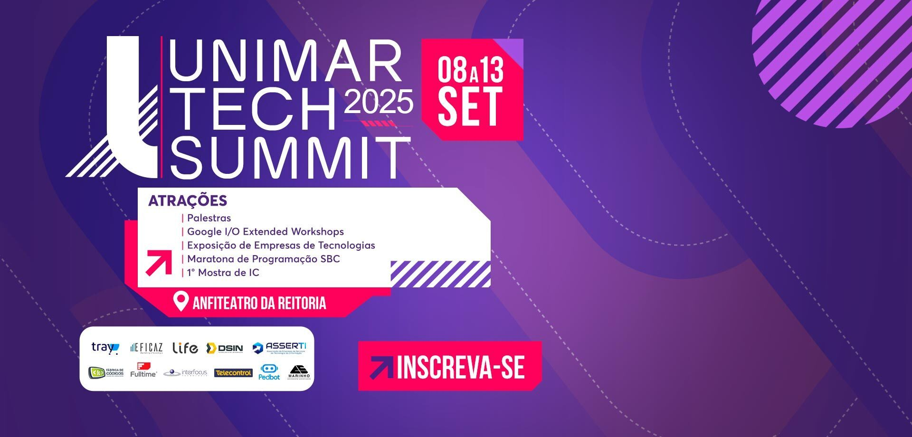
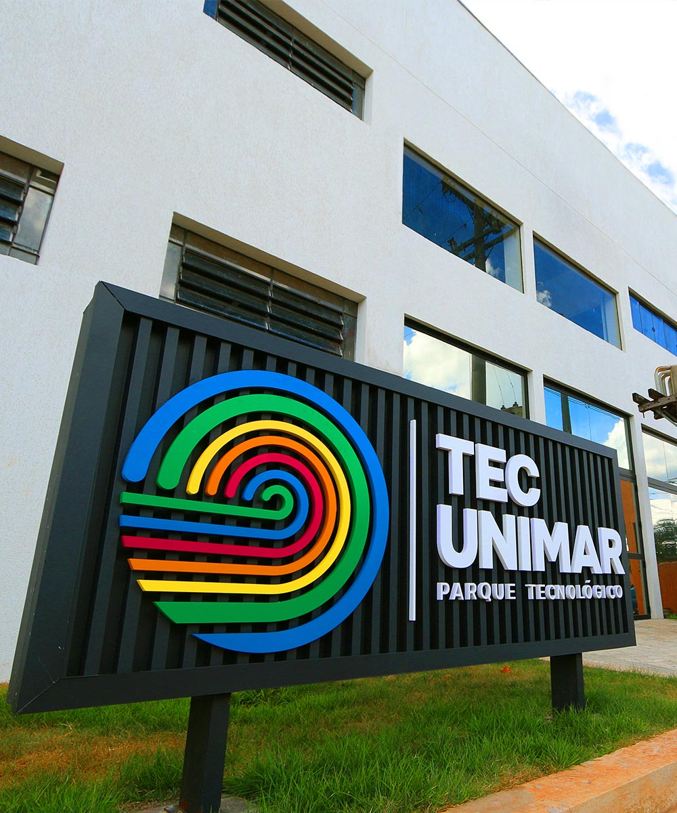

aprenda a desenvolver e aplicativos para diferentes plataformas. Cursos altamente prático e focado no mercado de trabalho.
ver maisPrepare-se para atuar em áreas como desenvolvimento de software, inteligência artificial e mais. Fundamentos e inovação para o futuro.
ver maisExplore o universo da IA e suas aplicações no mercado. Aprenda a construir algoritmos inteligentes e inovadores.
ver maisIdeal para quem quer ser protagonista no universo da proteção digital e infraestrutura tecnológica
ver mais
